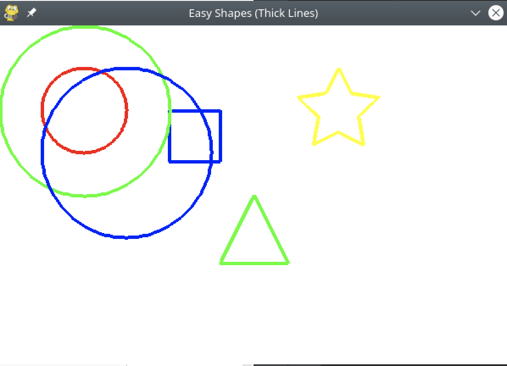

I learnt how to make 10 circles using loops.
Here I am trying to make different patterns.

from libs import easy_shapes
easy_shapes.setup()
# Jacks work here ...
easy_shapes.draw_circle(101,101,100,"green")
for i in range(1,10):
easy_shapes.draw_circle(101*i,101,100,"blue")
easy_shapes.finish() # Keep window open
Published on: March 20, 2025
A coding program that you can make shapes.
You can make shapes just using coding.

from libs import easy_shapes
easy_shapes.setup()
easy_shapes.draw_circle(100, 100, 50, "red")
easy_shapes.draw_square(200, 100, 60, "blue")
easy_shapes.draw_triangle(300, 200, 80, "green")
easy_shapes.draw_star(400, 100, 50, "yellow")
# Jack's work here ...
easy_shapes.draw_circle(101, 101, 100, "green")
easy_shapes.draw_circle(150, 150, 100, "blue")
easy_shapes.finish()
Published on: March 17, 2025
My first Python function
This Python function will multiply two numbers I give it.
def multiply(number1, number2):
print(number1 * number2)
if __name__ == '__main__':
multiply(2, 4)
multiply(16, 18)
multiply(1234, 1234567)
Published on: March 15, 2025